library(tidyverse)
library(here)
library(brms)
theme_set(theme_bw(base_size=20))
qb2 <- read_rds(here('data', 'session_1.rds'))9 Bayesian Data Analysis
This chapter presents a short introduction to Bayesian Data Analysis for linguistics with sections corresponding to the first four intro workshops offered during NZILBB R, Stats and Open Science sessions.
Section 9.1 provides some orientation to Bayesian methods by first fitting a frequentist version of a simple model then switching it to a model fit using the brms package. There’s a few details about what distinguishes Bayesian and frequentists methods in a callout block. We then turn to the ‘posterior distribution’ (Section 9.2), i.e., to the question of model interpretation. We look at how to determine what a Bayesian model tells us after it has seen the data. We then turn to the ‘prior distribution’, which allows the researcher to incorporate relevant information to the model before the model sees the data (Section 9.3). This is a significant difference between Bayesian and non-Bayesian approaches. Finally, we consider various metrics of model health (including, for instance, ’trace plots) (Section 9.4).
Further, and more detailed, resources are set out in Section 9.5
9.1 Orientation
Note
This section corresponds to the slides here.
One easy way to get access to the data used in this section is to start an R project in RStudio, select ‘version control’, and use the GitHub repository https://github.com/nzilbb/ws-bayes-1.
9.1.1 A Silly Model
People from Christchurch are (in)famous for asking people what secondary school they attended. This is typically, I suppose, taken to be an obsession with social status and class. But is there identifiable linguistic variation between people who went to different schools?
Let’s look at data from the QuakeBox corpus which bears on this question (Clark et al. 2016; Walsh et al. 2013).
We’ll first load a few packages and some data.
Figure 9.1 shows [trap{.smallcaps}] F1 realisations, normalised via Labanov normalisation, for all schools which have three or more students in our dataset.
qb2 |>
group_by(school) |>
mutate(
student_n = length(unique(part_id))
) |>
filter(student_n >= 3) |>
ungroup() |>
group_by(part_id) |>
summarise(
F1_lob2 = mean(F1_lob2, na.rm=T),
school = first(school)
) |>
ggplot(
aes(
y = F1_lob2,
x = reorder(school, F1_lob2)
)
) +
geom_boxplot() +
scale_y_reverse() +
theme(
axis.text.x = element_text(size=12, angle = 45, hjust = 1)
) +
labs(
y = "TRAP F1 (Lobanov)",
x = "High school"
)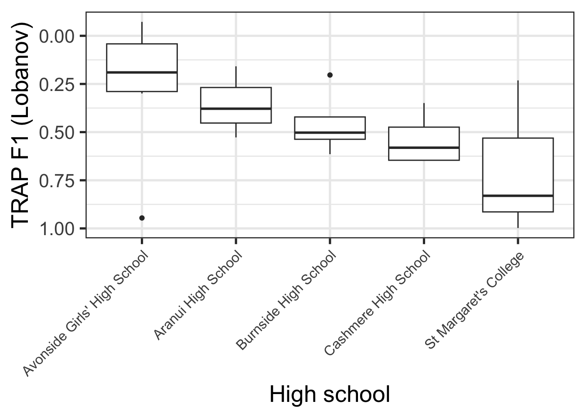
The patterns in Figure 9.1 are something like what would be expected given social stereotypes. Avonside Girls’ is a state school in the, typically less well-off east side of the city, while St Margaret’s is a private school for girls in a very well-off part of the city. Lower trap realisation are, in turn, indicative of more conservative NZE (note flipped y-axis).
Suppose we wanted to fit a model to determine whether the trap F1 realisations of St Margaret’s and Avonside really are different.1 Let’s do this is in a standard, non-Bayesian (i.e. ‘frequentist’), way:
# Create subset of data with only Avonside and St Margaret's
trap_sub <- qb2 |>
filter(
school %in% c(
"Avonside Girls' High School",
"St Margaret's College"
)
) |>
select(
age, school, F1_lob2, part_id
)
trap_fit <- lm(
F1_lob2 ~ school,
data = trap_sub
)Let’s have a look at the model summary:
summary(trap_fit)
Call:
lm(formula = F1_lob2 ~ school, data = trap_sub)
Residuals:
Min 1Q Median 3Q Max
-2.73538 -0.47347 -0.02352 0.46701 2.95033
Coefficients:
Estimate Std. Error t value Pr(>|t|)
(Intercept) 0.24632 0.02946 8.362 <2e-16 ***
schoolSt Margaret's College 0.47782 0.05258 9.087 <2e-16 ***
---
Signif. codes: 0 '***' 0.001 '**' 0.01 '*' 0.05 '.' 0.1 ' ' 1
Residual standard error: 0.8195 on 1126 degrees of freedom
Multiple R-squared: 0.06832, Adjusted R-squared: 0.0675
F-statistic: 82.58 on 1 and 1126 DF, p-value: < 2.2e-16This is a fairly standard analysis of variance model. We’re attempting to determine if there is a difference in the mean trap F1 between people who attended one or other of these schools. Looking first to the coefficients table, our (Intercept) estimate, 0.25, indicates the estimated mean value for Avonside alumnae, while the estimate for schoolSt Margaret's College indicates the difference in means between Avonside and St Margaret’s alumnae. Since this is positive, the model says that the trap F1 value for St Margaret’s is higher than for Avonsiders, and thus that their trap realisation is lower in the vowel space. This is conservative for New Zealand English.
The coefficients section also gives an indication of ‘error’ (the Std. Error column) and information about statistical hypothesis tests corresponding to each coefficient (the t value and Pr(>|t|) columns). In this case, we would say that the difference between Avonside and St Margaret’s alumnae, in terms of mean trap production is statistically significant. We’ll see shortly that this is not a core idea when we switch to a Bayesian approach.
Finally, we see some important information about the residuals (i.e., the variation not explained by the model) above the coefficients and some global information, including another statistical test, below the coefficients.
A side quest: this subsection is called ‘a silly model’. One way in which it is silly is that the data does not allow us to exclude some very plausible alternative explanations for this difference in trap F1. You can convince yourself of this using the techniques from the Exploratory Data Visualisation chapter. Consider, especially, the distribution of ages across schools.
How do we make this model Bayesian? It’s very easy with the brms package.
library(brms)
trap_fit_b <- brm(
F1_lob2 ~ school,
data = trap_sub
)In a very narrow sense, becoming Bayesian is often as easy as switching whatever modelling function you are currently using (lm(), lme4::lmer(), mgcv::gam() etc) to brms::brm(). Often this has the nice consequence of removing any convergence issues you might have been having (especially with complex random effects modules using the lme4 package).2 It is important to be careful here. There are no free rides!
If you run the code block above you will see a series of messages about ‘compiling’ a ‘Stan program’, and ‘sampling’ across a variety of ‘chains’. We’ll discuss the meaning of these outputs later. These messages are the first indication that something quite different is going on when we fit a Bayesian model.
Let’s start by looking at the model summary:
summary(trap_fit_b) Family: gaussian
Links: mu = identity
Formula: F1_lob2 ~ school
Data: trap_sub (Number of observations: 1128)
Draws: 4 chains, each with iter = 2000; warmup = 1000; thin = 1;
total post-warmup draws = 4000
Regression Coefficients:
Estimate Est.Error l-95% CI u-95% CI Rhat Bulk_ESS
Intercept 0.25 0.03 0.19 0.30 1.00 4058
schoolStMargaretsCollege 0.48 0.05 0.37 0.58 1.00 3698
Tail_ESS
Intercept 3039
schoolStMargaretsCollege 2955
Further Distributional Parameters:
Estimate Est.Error l-95% CI u-95% CI Rhat Bulk_ESS Tail_ESS
sigma 0.82 0.02 0.79 0.86 1.00 3992 2979
Draws were sampled using sampling(NUTS). For each parameter, Bulk_ESS
and Tail_ESS are effective sample size measures, and Rhat is the potential
scale reduction factor on split chains (at convergence, Rhat = 1).The coefficients table here is almost identical to the table for trap_fit. There are the same two coefficients, with the same estimates and error (just rounded to two decimal places). The 95% “CI”s are the same as the 95% “CI”s which would be generated by the error terms in the non-Bayesian model.3
But some differences already emerge: there’s some new language about ‘chains’, ‘iter’, ‘warmup’, and ‘draws’. There’s also columns with names containing ‘ESS’, or ‘Effective Sample Size’. Finally, note the absence of any statistical tests.
The model summary undersells some of the key differences between Bayesian and non-Bayesian methods. Two are worth focusing on here:
- Bayesian methods produce distributions for model coefficients rather than point estimates.
- Bayesian “CI”s, variously named ‘credible intervals’ or ‘compatibility intervals’, are interpreted differently from frequentist ‘confidence intervals’.
Let’s consider each of these in turn.
Figure 9.2 shows the probability distribution for the intercept coefficient, i.e., the estimated mean value for Avonside alumnae. From this distribution, we can work out the probability, according to the model and data, that the true mean value is in a given range. The probability distribution is the real estimate derived from the model. The decision to summarise the distribution with a single value is entirely optional and the choice of a summary value is up to us. We can use the median, the mean, the 10% quartile, or whatever else might be useful for a given problem. The summary we have just looked at gives the mean value in the Estimate column.
library(tidybayes) # Tidybayes will be discussed in more detail below.
trap_fit_b |>
spread_draws(b_Intercept) |>
rename(
Avonside = b_Intercept
) |>
ggplot(
aes(
x = Avonside
)
) +
geom_density(alpha=0.4, colour="darkgreen", fill="darkgreen") +
labs(
x = "Avonside coefficient (intercept)"
)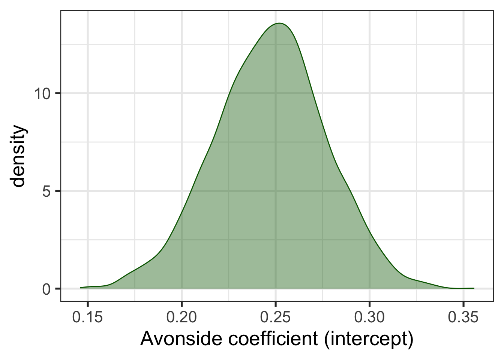
Bayesian CIs, or ‘credible intervals’ naturally emerge from this way of thinking about model estimates. Credible intervals are another way of summarising the probability distributions generated by Bayesian models. In this case, we might want a 95% credible interval centred on the median (i.e., the interval between the 2.5% and the 97.5% quantiles of the distribution). We interpret this interval as having a 95% probability of containing the true mean trap production for Avonsiders.
There is no particular reason to insist on 95% credible intervals, and in practice a series of ‘widths’ are often reported. One way to do this visually is as follows:
trap_fit_b |>
spread_draws(b_Intercept) |>
rename(
Avonside = b_Intercept
) |>
ggplot(
aes(
x = Avonside
)
) +
stat_halfeye(
slab_alpha = 0.4,
fill = "darkgreen",
slab_colour = "darkgreen",
.width = c(0.5, 0.7, 0.9),
point_interval = "mean_qi",
interval_size_range = c(2, 4)
) +
labs(
x = "Avonside coefficient (intercept)"
)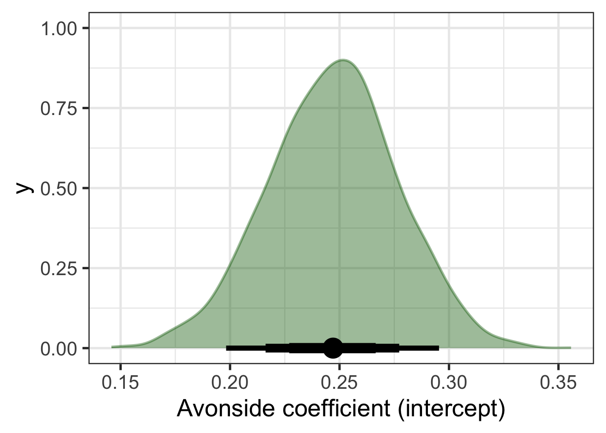
Figure 9.3 displays both the distribution for the coefficient and an ‘interval plot’ identifying the mean value of the distribution and a series of quantile intervals of different widths centred on the median. The thickest line shows the 50% interval, the next thickest shows the 70% and the thinnest line shows the 90% interval.
Suppose, now, that we are interested in whether Avonside and St Margaret’s alumnae have distinct productions of trap. We can get at this by sampling trap values from our model for both schools and looking at the distribution of the difference between the two.4 Figure 9.4 shows this and adds a vertical dashed line at 0. This allows a visual indication of the compatibility of the model and data with the hypothesis that the difference between schools is 0.
predictions <- tibble(
school = unique(trap_sub$school)
) |>
add_epred_draws(trap_fit_b)
predictions |>
pivot_wider(
names_from = school,
values_from = .epred,
id_cols = .draw
) |>
mutate(
Difference = `St Margaret's College` - `Avonside Girls' High School`
) |>
ggplot(
aes(
x = Difference
)
) +
geom_density(alpha = 0.4, fill = "grey") +
geom_vline(xintercept = 0, linetype="dashed")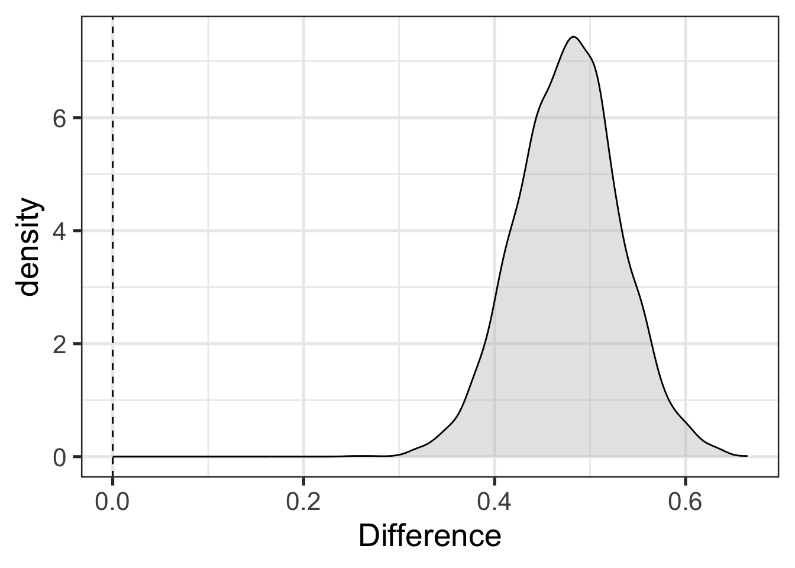
The difference in Figure 9.4 is positibe when St Margaret’s alumnae have higher trap F1 than Avonside (i.e., more conservative productions). Rather than a statistical hypothesis check with a p-value, as in the initial model, we have a visual indication of compatibility between a hypothesis we are interested in and the combination of the model and data.5
TipProbability, Bayesianism and Frequentism
It might seem strange that there are (at least) two ‘schools’ of statistics. This callout block is a short discussion of why with an emphasis on how the two approaches differ in their use of probability.
Put simply: For frequentism (the main alternative to Bayesianism), probability quantifies the reliability of the method. For Bayesians probability quantifies uncertainty. Both of these ideas are well motivated and are unlikely to go away any time soon. Which approach to probability one prefers is largely a matter of ones philosophical orientation.
‘Frequentist’ and ‘Bayesian’ are terms applied directly to interpretations of probability.6 Frequentist understandings of probability emphasise, in one way or another, the frequency with which events of a certain type occur in a sample. So, for instance, a frequentist understands the claim that there is a 5% probability of drawing a red ball from this bag of balls in terms of the frequency with which red balls are actually (or would be) drawn from the bag. Probability is tied to the practice of sampling and is, according to the frequentist, not a subjective notion. It’s about what does or would happen were you to sample from the relevant population.
Probability statements which are naturally interpreted in frequentist terms appear often in sociolinguistics. If, for instance, I fit a model to some New Zealand English data, I might find that, say’, “The probability of starting a conversational interaction with”kia ora” is 10% for female speakers born in the 1970s”. A frequentist understanding of this statement is that if I went out and sampled female speakers born in the 1970s, I would find that 10% of the sample of conversational interactions would begin with “kia ora”.
A ‘Bayesian’ about probability understands probability as expressing degrees of belief, or uncertainty, or something of that sort. Some Bayesians treat this as a subjective notion — i.e., a measure of how strong this or that individual’s beliefs are. But there are more and less ‘subjective’ versions of Bayesianism.
Claims which are naturally interpreted in Bayesian terms are also present in linguistics. For instance, if I am working on language phylogenies I might make a claim like “the probability that language X and language Y are in the same family is 65%”. There is no plausible way to understand this on frequentist terms. What would you sample? You’d have to be able to sample ‘universes’ in which the two languages exist and find that in 65% of universes the two languages are in the same family. It is understandable as a claim about how certain we should be that the two families are related given our current knowledge (in practice for data analysis, by ‘current knowledge’ we mean our model and data).7
Frequentist statisticians use probability to measure the reliability of a statistical method. They ask: how often would I be wrong if I applied this method over and over again? This is where p-values come from. The p-value tells us how often a certain kind of result occurs in applications of a given method. We can then, say, pick a p-value cut off of 0.05 as a decision that we accept that we will wrongly identify an effect in cases where there is no effect 5% of the time. The point is that the probability attaches to applications of the method.
This helps to interpret frequentist confidence intervals. These are often wrongly interpreted as providing, say, a region in which there is a 95% probability of finding the true value. This is what Bayesian ‘credible intervals’ provide, but it is not the frequentist approach. A frequentist confidence interval says that in 95% of cases of in which we apply the method of generating confidence intervals, the true value will be inside the interval. This is claim about repeated applications of the method. When we do this, the actual interval we are talking about will change (i.e., with a slightly different sample you’ll get different confidence intervals). The 95% probability does not apply to the particular interval we generate from our data, but to the whole range of intervals we might get from applying the same method to different samples. The Bayesian credible interval, on the other hand, attaches the probability to this specific interval.
Bayesian methods are often defended on the basis that they are less counter-intuitive than frequentist methods. This may be so. But it is important to note that this is only done by changing the topic. We are not longer talking about the reliability of a general method but rather about the compatibility of this specific data set and model with a range of parameter values.
One common charge against Bayesian statistics is that there is something essentially ‘subjective’ about Bayesian methods. It is true that there is something in some sense subjective about Bayesian interpretations of probability and in the use of a ‘prior’ distribution (more later). But frequentist approaches are also subjective, in the sense of requiring researcher judgement in the selection of assumptions or the decision that model diagnostics are ‘good enough’ etc. They just don’t use probability as a way of capturing these features of modelling. For more on the idea of ‘subjectivity’ in statistics see Gelman and Hennig (2017).
All this to say, Bayesianism is not ‘statistics 2.0’. It’s an orientation to data analysis which you might find appealing and is likely to be increasingly popular, such that you ought at least to be able to understand it.
Before getting deep into Bayesian methods, it’s worth getting comfortable with the simple models we’ve looked at so far.
Exploratory visualisation refresh: load the data and do some exploratory visualisation. Are there any variables apart from
schoolwhich might be important?Make sure you’re set up: Run the code blocks above on your own machine.
Data wrangling refresh: Fit a Bayesian model which distinguishes
Modify the code which generated Figure 9.3 with different values for
.width(i.e., different width credible intervals).Plot the distribution for the
schoolStMargretsCollegecoefficient. Is this the same distribution as in Figure 9.4. If so, why?
9.2 Posterior
Note
This section corresponds to the slides here.
One easy way to get access to the data used in this section is to start an R project in RStudio, select ‘version control’, and use the GitHub repository https://github.com/nzilbb/ws-bayes-2.
Bayesian models produce probability distributions for every ingredient of the model. The probability distribution after the model has been updated by the data is called the posterior distribution. When we use the posterior distribution to make predictions about what we would see if we looked at new data, we get the posterior predictive distribution. The primary ways to determine what a Bayesian model says about your research question is to explore these posterior distributions.
Let’s start by looking at a case study from a recent LabPhon paper (Marshall et al. 2024), entitled “Variation and change over time in British choral singing (1925–2019)”. For our purposes, we only need to know a handful of things about the paper.
Front vowels in Southern Standard British English (SSBE) have lowered over the 20th century. On the assumption that British choral singing is closely related to SSBE, Marshall et al. (2024) investigated whether front vowels lower in choral singing in both SSBE (Cambridge) and non-SSBE (Glasgow) areas, using Bayesian linear mixed effects models.
Formant values from a Glasgow choir (really two related choirs) and the choir of King’s College, Cambridge were modelled, with the following formula:
Vowel Formant ~ Vowel + Time + Duration + FollowingSegment +
Genre + Vowel:Time + Vowel:Duration + Time:Duration +
Genre:Duration + (1|Album) + (1|Song) + (1|Word) +
(1|Album:Song) + (1|Song:Word)where the vowels are fleece, kit, dress, and trap, and time is identified in terms of the term of musical directors. The Duration variable represents the duration of the vowel segment. There are random effects for the specific word, song, and album from which each token has been extracted.
9.2.1 Drawing from the Posterior Distribution
One bit of magic in Bayesian inference is that we can draw samples from a probability distribution even if we don’t have a perfect mathematical representation of the distribution. This gives us a nice method for summarising complex distributions: we just take a lot of samples and depict the resulting patterns.
This is how we learn about our model parameters and, indeed, about whatever values we wish to derive from the posterior distribution.8
We will load this model directly from their OSF page.
Warning
Workshop participants with Windows computers could not load this model. The slightly inconvenient solution is to download the data and refit the model yourself. This is not a bad exercise!
You can download the data and the original modelling script in R by following the steps here: https://github.com/nzilbb/ws-bayes-2/blob/main/analysis.R.
## Model (1.1GB!)
# Uncomment the following lines to download the model.
# download.file(
# "https://osf.io/hzr6k/download",
# here('osf', 'f1_mod.rds')
# )
f1_mod <- read_rds(
here('data', 'f1_mod.rds')
)The tidybayes package provides some nice functions for getting samples from the posterior distribution, summarising, and plotting. The most useful sampling functions are gather_draws() and spread_draws(). The former, gather_draws(), produces a long dataframe with a column named .variable which identifies which parameter is being sampled and a .value column with the sampled value. It also has the capacity to collect all parameters which match a regular expression (NB: the regular expression is not given inside a string. Rather, we use backticks.)
To illustrate this, lets look at where kit, dress, and trap sit via gather_draws() and a regular expression.9
# Get all parameters matching `b_vowel[A-Z]+` in long format
vowel_post <- f1_mod |>
gather_draws(regex = TRUE, `b_vowel[A-Z]+`) The parameters which match this pattern are b_vowelKIT, b_vowelDRESS, b_vowelTRAP. To see the other parameters available, you can use get_variables(model_name). In models such as this one, with a complex random effects structure, the number of parameters gets very large and just scrolling thorugh the output of get_variables() is less useful.
Long format draws from the posterior can be quite convenient for plotting. Figure 9.5 shows the distributions for each of these parameters in a quite straightforward way, along with 50%, 70%, and 95% credible intervals. Note that stat_halfeye() is one of the plotting functions from tidybayes.
vowel_post |>
ggplot(
aes(
y = .variable,
x = .value
)
) +
stat_halfeye(.width = c(0.5, 0.7, 0.95))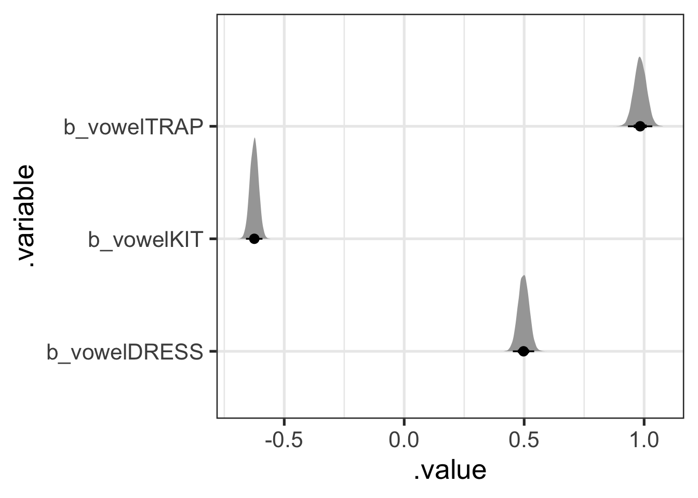
What do these values mean? And where is fleece? The answer is clear in the paper and its associated scripts: the model uses sum coding for the factor variables. That is, parameter values represent differences from the mean of means. So, in this case, the most likely difference from the mean of means for dress is 0.5. That is, we expect the F1 value for dress to be around 0.5 greater than the mean of means and thus lower in the vowel space than kit, but not trap.
Because this is a mean of means, the distribution for fleece can actually be calculated from the values for trap, kit, and dress. The most convenient way to do this with tidybayes is to instead use the spread_draws() function, which will give use a column for each parameter.
vowel_post <- f1_mod |>
# I spell out each variable rather than using regex for illustration only.
# You could just as easily use `spread_draws(regex = TRUE, `b_vowel[A-Z]+`)`
spread_draws(c(b_vowelKIT, b_vowelDRESS, b_vowelTRAP)) |>
# Then calculate the fleece value: it is the negative of the sum of all
# the other values (this is how the 'missing' value is represented in sum
# coding).
mutate(
b_vowelFLEECE = - (b_vowelKIT + b_vowelDRESS + b_vowelTRAP)
)Of course, it’s easier to plot this in long format, so we’ll pivot and then plot, but this time with fleece.
vowel_post <- vowel_post |>
pivot_longer(
cols = b_vowelKIT:b_vowelFLEECE,
names_to = ".variable",
values_to = ".value"
)
vowel_post |>
ggplot(
aes(
y = .variable,
x = .value
)
) +
stat_halfeye(.width = c(0.5, 0.7, 0.95))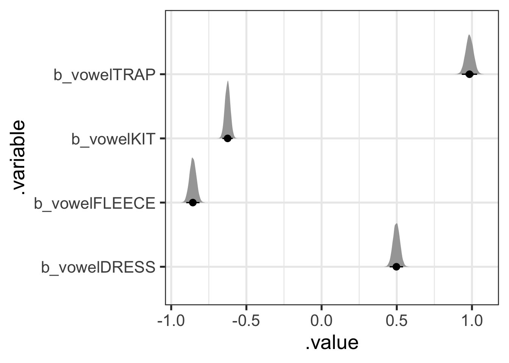
The other aspect of tidybayes which we have not discussed in any detail is the point interval summary functions: these start with mean_, median_, or mode_ and end with qi or hdi.10 These take a grouped dataframe with draws to summarise (most conveniently, you can feed the result of gather_draws() straight into these functions. Let’s first look at the median_qi() function.
vowel_post |>
# We have to 'group' this dataframe to get a row for each parameter.
group_by(.variable) |>
median_qi(.width = 0.9)# A tibble: 4 × 7
.variable .value .lower .upper .width .point .interval
<chr> <dbl> <dbl> <dbl> <dbl> <chr> <chr>
1 b_vowelDRESS 0.497 0.460 0.534 0.9 median qi
2 b_vowelFLEECE -0.856 -0.893 -0.819 0.9 median qi
3 b_vowelKIT -0.625 -0.654 -0.596 0.9 median qi
4 b_vowelTRAP 0.983 0.941 1.03 0.9 median qi The output above gives us a .value, i.e., in this case, the median, for each parameter’s distribution. It also gives us a .lower and .upper value for a quantile interval with a width of 90%. That is, the output above is the median value for each vowel along with the 5% and 95% quantiles for each parameter distribution. This gives us reportable values representing both the centre and the tails of each each distribution.
- Try some alternative point summaries (e.g.
mode_qi()). - Try
median_hdi(). Is the ‘HDI’ (or ‘highest density interval’) distinct from the quantile interval? Look up ‘highest density interval’ and work out what it is.
There is no privileged width or point summary for these distributions. When reporting your analysis, the most important thing is to make it clear what the numbers you are reporting are. In this case, the three questions are:
- What is the point summary?
- What kind of interval summary are you using?
- What width(s) is(are) the interval(s)?
Before turning to more complex draws from the posterior, I want to emphasise that everything has a distribution in these models. So, for instance, if you wanted a distribution on the effect of the word ‘lowing’ in ‘Away in a Manger’, you can get one:11
a_word_post <- f1_mod |>
gather_draws(`r_song:text[away.in.a.manger_lowing,Intercept]`)
a_word_post |>
ggplot(
aes(
x = .value
)
) +
stat_halfeye(.width = c(0.5, 0.7, 0.95))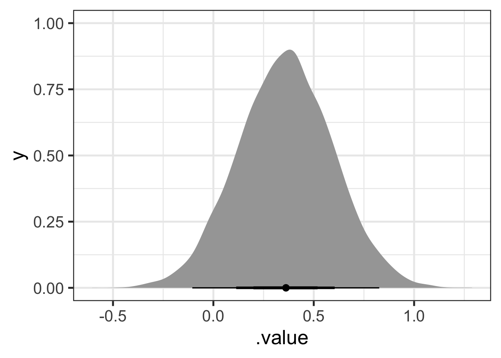
Figure 9.7 suggests that the kit in ‘lowing’ is produced lower in the vowel space than would be expected from the rest of the model. Looking at the 70% width point interval plot under the distribution suggests that our credence on the difference being somewhere between 0.2 and 0.5 in normalised space should be around 70%.
9.2.2 Exploring an Interaction
To explore the vowel-by-director interaction, Marshall et al. plot marginal means estimated from the posterior. The following code uses modelbased::estimate_means() to do this. modelbased is a nice package which provides a consistent interface to a series of other packages to enable model interpretation and inference from models. In this case, we are interfacing with the emmeans package.12
library(modelbased)
f1_means <- estimate_means(
f1_mod, by = c("vowel", "director"),
backend = "emmeans",
ci = 0.9
)
f1_means |>
# Create a 'region' variable for plotting.
mutate(
region = if_else(
str_detect(director, "BO|DW|PL|SC"), "Cambridge", "Glasgow"
)
) |>
ggplot(
aes(
x = vowel,
y = Mean,
ymin = CI_low,
ymax = CI_high,
colour = director,
shape = region
)
) +
geom_errorbar(position = position_dodge(width = 0.6)) +
geom_point(position = position_dodge(width = 0.6)) +
scale_y_reverse() +
labs(
x = NULL,
y = "F1",
colour = "Director",
shape = "Region"
)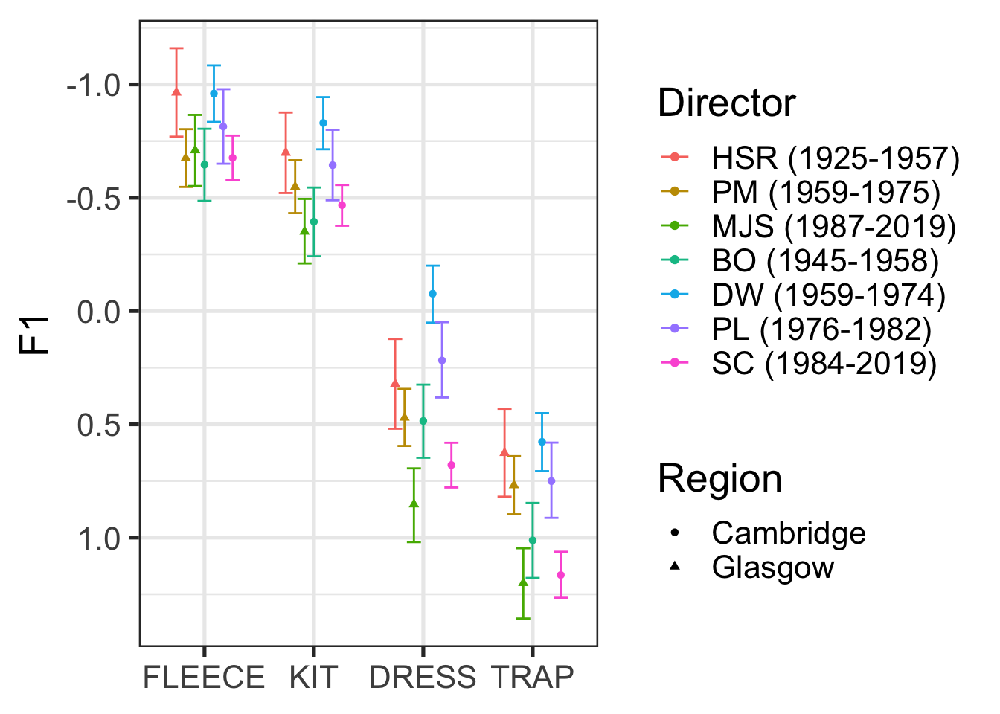
Figure 9.8, for the most part, indicates lowering front vowels in both Glasgow and Cambridge, in choral singing, overtime.13 For actual discussion of the significance of these results, you should of course see Marshall et al. (2024). The key point here is that these are just summaries of the posterior distribution!
Note that there is no statistical test here. We can set our own cut off value for taking a feature of the posterior distribution seriously. In the paper, Marshall et al. use 95% CIs which exclude 0 as their cut off for taking a parameter of the model seriously (see Marshall et al. 2024, Table 6). The interaction plot in Figure 9.8 can then be used to visually describe the changes from one director to another. If we wanted to, we could produce distributions of the difference between two directors of interest (say BO and SC or DW and SC).
9.2.3 Posterior Predictive Distribution
The posterior distribution tells us what we should expect of the model parameters given the data. We can use this information to generate new data using the model. Each new datum is generated by sampling a value for all parameters from the posterior distribution, including the error parameter, and applying the model formula. Taking lots of samples gives us a lot of flexibility for describing the posterior predictive distribution.
You may already be familiar with the predict() function in various contexts. Predictions are by default generated for each row of the data frame used to fit the model. But we can also decide on a set of values of interest for which we want predictions (e.g., what range vocalic productions should we expect from an album of carols directed by Stephen Cleobury?).
Here, I’ll use the estimate_prediction() function, again from the modelbased package. This will summarise the predictions into a point and interval range (see if you can figure out what the range type, width, and point are in the code below).
sc_preds <- estimate_prediction(
f1_mod,
by = c(
# I fix some variable values here
"director = 'SC (1984-2019)'",
"genre = 'Carols'",
# If I just give the variable name, it will give a range of values for the
# variable. In the case of factor variables (i.e., in this case!), it'll
# give all levels of the factor
"vowel"
),
iterations = 500,
include_random = FALSE,
ci = 0.9,
ci_method = "quantile",
centrality_function = stats::median
)Looking at this dataframe shows a bit more of what is happening under the hood.
sc_preds# A tibble: 4 × 12
director genre vowel log_vdur followingSeg_f text song album Predicted SE
<fct> <fct> <fct> <dbl> <fct> <fct> <fct> <fct> <dbl> <dbl>
1 SC (198… Caro… FLEE… -0.874 p <NA> <NA> <NA> -0.588 0.540
2 SC (198… Caro… KIT -0.874 p <NA> <NA> <NA> -0.334 0.552
3 SC (198… Caro… DRESS -0.874 p <NA> <NA> <NA> 0.766 0.519
4 SC (198… Caro… TRAP -0.874 p <NA> <NA> <NA> 1.25 0.498
# ℹ 2 more variables: CI_low <dbl>, CI_high <dbl>Note the message below the data, which indicates the conditions which are built in to the predictions. We are predicting for a mean duration vowel which is followed by /p/. These values where chosen automatically (/p/ is, presumably, the modal value of following segment in this data).
We can plot these predictions nicely using ggplot2.
sc_preds |>
ggplot(
aes(
x = vowel,
y = Predicted,
ymin = CI_low,
ymax = CI_high
)
) +
geom_errorbar() +
geom_point() +
scale_y_reverse()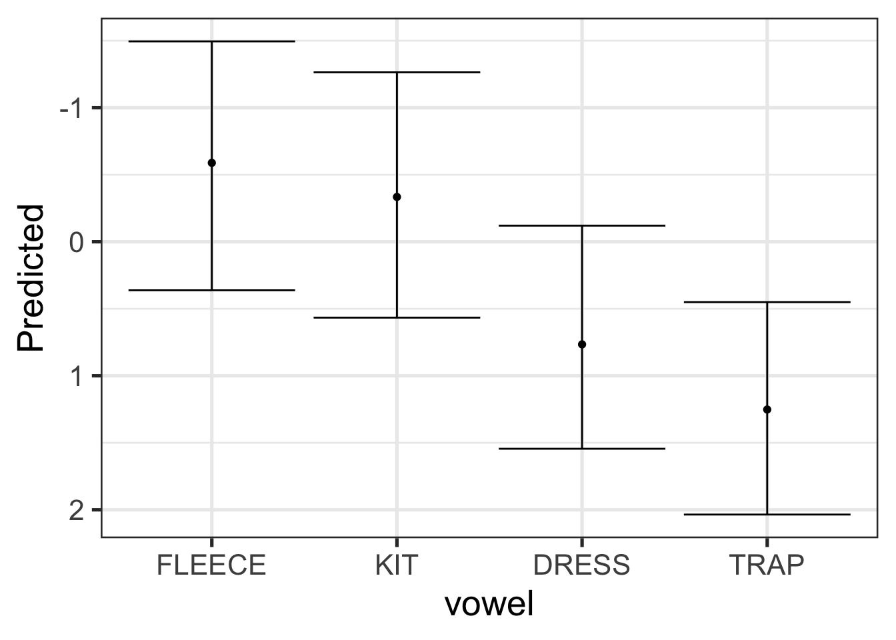
Let’s quickly show that the prediction intervals, generated from the posterior predictive distribution are wider than those for the posterior distribution. All will be the same as the code block above, except with estimate_expectation() rather than estimate_prediction().
sc_exp <- estimate_expectation(
f1_mod,
by = c(
"director = 'SC (1984-2019)'",
"genre = 'Carols'",
"vowel"
),
iterations = 500,
include_random = FALSE,
ci = 0.9,
ci_method = "quantile",
centrality_function = stats::median
)
sc <- bind_rows(
"Prediction" = sc_preds,
"Expectation" = sc_exp,
.id = "interval_type"
)
sc |>
ggplot(
aes(
x = vowel,
y = Predicted,
ymin = CI_low,
ymax = CI_high,
colour = interval_type
)
) +
geom_errorbar(position = position_dodge(width = 0.5)) +
geom_point(position = position_dodge(width = 0.5)) +
scale_y_reverse()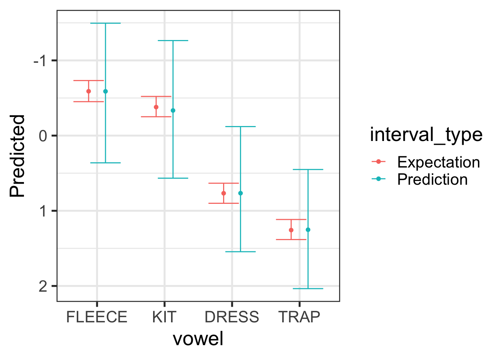
For Figure 9.10, the expectation interval (red) tells us how confident we should be in the location of the median for the vowel in question (we’re 90% sure that it’s within the red bars). The prediction interval gives us an interval in which we’re 90% sure any new vowel tokens. Because we want to cover 90% of the tokens, this interval is much wider. In both cases, we are looking at values for Stephen Cleobury directed albums of carols which precede /p/.
If we want to go deeper, and incorporate more uncertainty from our model, it is convenient to return to the tidybayes package and its add_predicted_draws() function. Here I’ll add predictions for all of the data points from Stephen Cleobury, but we’ll take advantage of the random effect structure as well. Here we are trying to get at the full range of formant values we might expect from an entirely new album, song, and text, across the full range of token durations and linguistic environments present in our original data.
sc_new_re_preds <- f1_mod$data |> # note I'm accessing the original data
# through the brms model which I have loaded in from OSF. I have not
# separately had to download the original data.
filter(
director == 'SC (1984-2019)'
) |>
mutate(
text = "hi",
album = "how",
song = "you?"
) |>
add_predicted_draws(
f1_mod,
allow_new_levels = TRUE,
sample_new_levels = "gaussian",
ndraws = 500
)Let’s plot these predictions:
sc_new_re_preds |>
group_by(vowel) |>
median_qi(.prediction, .width = 0.9) |>
ggplot(
aes(
x = vowel,
y = .prediction,
ymin = .lower,
ymax = .upper
)
) +
geom_errorbar() +
geom_point() +
scale_y_reverse()Figure 9.11 have even wider intervals than Figure 9.9. This is because it incorporates even more uncertainty. This tells us that where we should expect new token readings to fall given an unknown album, song, and text, across the full range of variation in token duration and linguistic environments found in the original data for Stephen Cleobury.
As is frequently the case, the key point here is to be aware of what you are deriving from your models and to accurately report it!
9.2.4 Posterior Predictive Checks
The posterior predictive distribution is used by a very important class of model checks: posterior predictives checks.
The core idea behind posterior predictive checks is simple: compare your model’s predictions to the actual data. If the predictions look nothing like the data, the model is in trouble, and this is a signal to either discard it or improve it. These checks are intentionally visual and informal.
One basic check is to overlay the distribution of predicted values against the actual response variable, using brms’s built-in pp_check() function:
pp_check(f1_mod, type = "dens_overlay", ndraws = 100)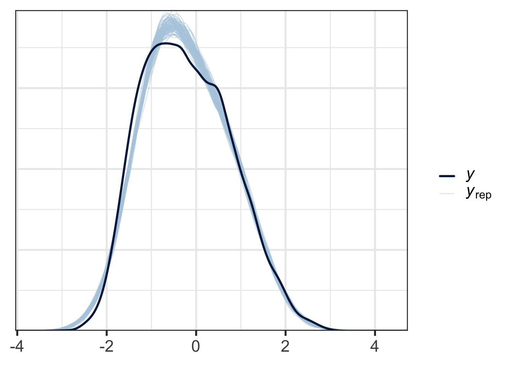
Figure 9.12 shows the distribution of response values for the actual data in dark blue and the responses of data generated from the posterior predictive distribution in light blue. This allows us to see some systematic incompatibilities between the data and the model. At the right tails, the real data and the simulated data align very closely, while at the left tail, there is some divergence. This kind of plot would be in most cases acceptable.
Supposing we are just interested in whether we’re getting the central tendency for each vowel right, this time using the mean as our central tendency measure rather than the median, we can do the following:
pp_check(
f1_mod,
type = "stat_grouped",
group = "vowel",
stat = "mean",
ndraws = 100
)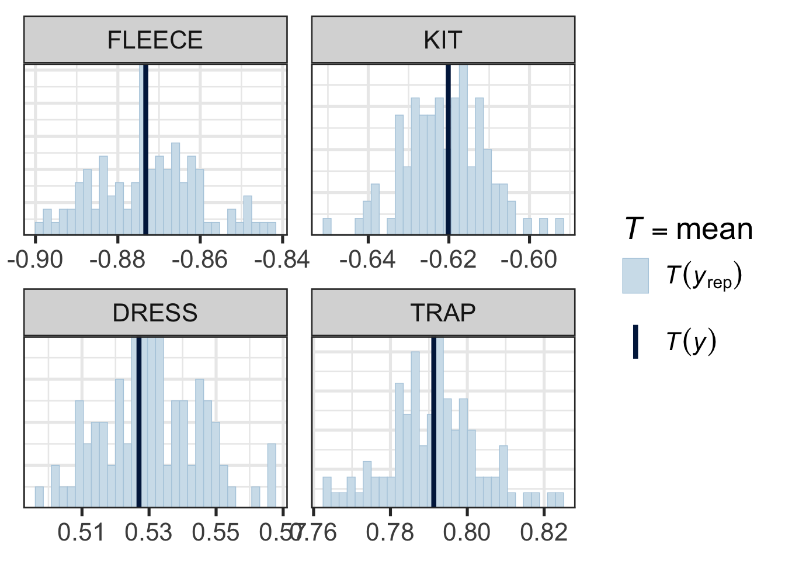
Figure 9.13 does not suggest any systematic problems in the relationship between the model and the actual data. Note how narrow the x-axis is in each pane.
Beyond the checks built in to pp_check(), you can design checks around whatever is most important for your model to capture. For example, if you wonder whether the effect of log duration might be non-linear, you can plot the model’s linear predictions14 against the observed relationship:
# take a set of predictions from a 'grid' of representative values.
mod_preds <- estimate_prediction(f1_mod, data="grid", iterations=100)
f1_mod$data |>
ggplot(
aes(
x = log_vdur,
y = f1_lob
)
) +
geom_point(alpha = 0.1, colour = "grey") +
geom_smooth() +
geom_smooth(
aes(
x = log_vdur,
y = Predicted
),
data = mod_preds,
method = "lm",
colour = "black"
) +
facet_wrap(vars(vowel))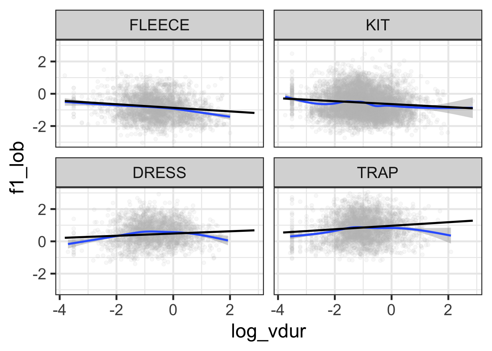
Figure 9.14 suggests some reduction in F1 at the extremes of log duration for dress and trap, and for high duration tokens of fleece. This is just an impressionistic judgment on the basis of the blue lines (a smooth on the original data) and the straight black lines (a linear interpolation of the predicted values). Within span of durations in which the vast majority of the data appears, this looks good enough!
The overall point here is that you can probe whatever features of the posterior predictive distribution you like and compare them to your actual data. The trick is to figure out exactly what features of the model you need to match the data and which you don’t. This will depend very much on your specific research question.
9.3 Prior

9.4 Model Health
9.5 Resources
In a real data analysis project, it would be a bad idea to jump straight to a model here. Ignore this for the moment!↩︎
This practical benefit is a significant motivation for many to switch to Bayesian methods.↩︎
My scare quotes here will be explained in a moment.↩︎
For this simple model, the resulting distribution is just the distribution of the
schoolStMargaretsCollegecoefficient. An exercise below asks you to show this. ↩︎If the model or the data are bad, the distributions estimated by our Bayesian model will also be bad.↩︎
Acordding to the arch-frequentist, Charles Peirce, the Bayesian interpretation of probability could only work “if universes were as plenty as blackberries”.↩︎
NB: this means there isn’t really a distinction between model parameters and ‘post-hoc’ comparisons. This language comes from a frequentist orientation. The ‘post’ here, is ‘post’ some statistical test on a paramter. Use of this way of framing the statistics is my one significant complaint about the discussion by Marshall et al. (2024). Note that this complaint does not bear on their actual results.↩︎
Where’s fleece? Hold your horses.↩︎
There are some others too, see
?point_interval.↩︎That is, we’re looking at any effect of the word ‘lowing’ on tokens derived from the line ‘The Cattle are Lowing’ in our data set. That is, we’re looking at a few tokens of kit.↩︎
See the OSF page, linked above, for the direct use of
emmeansin the original script.↩︎The ‘for the most part’ hedge here covers the case of BO (Boris Ord), whose choir’s produced lower front vowels in (1945-1958) before the apparently more conservative DW (David Wilcocks) took over.↩︎
They’re linear predictions because log duration appears in the model as a linear term.↩︎